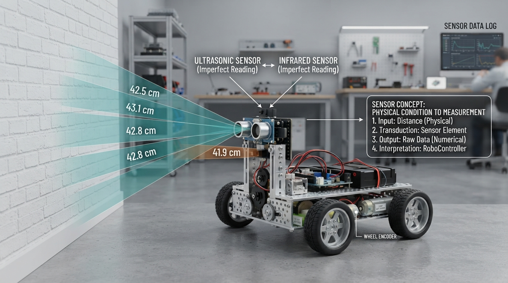

A robot does not receive perfect truth from a sensor. It receives a signal that must be interpreted, checked, and sometimes corrected.
This Professor OS lesson introduces the foundations behind reliable robotic perception:
• the difference between a physical quantity and a sensor reading;
• how noise creates variation between repeated measurements;
• why averaging can reduce changing noise but not constant bias;
• how a known reference can support a simple offset calibration;
• why vibration, mounting geometry, target surfaces, and temperature matter on real robots.
The included Python lab lets learners predict the result, calculate a calibration offset, compare raw and corrected readings, and inspect the remaining variation in a plot. The lesson also emphasizes an important engineering habit: calibration improves a model of the sensor under particular conditions; it does not make the sensor infallible.
Try the lab with a new reference distance and decide whether the same correction should still be trusted. Then consider what would change while RoboRover is moving.
Explore Professor OS: https://connect.vin/professor-os
#RoboticsEducation #Sensors #Calibration #Python
This Professor OS lesson introduces the foundations behind reliable robotic perception:
• the difference between a physical quantity and a sensor reading;
• how noise creates variation between repeated measurements;
• why averaging can reduce changing noise but not constant bias;
• how a known reference can support a simple offset calibration;
• why vibration, mounting geometry, target surfaces, and temperature matter on real robots.
The included Python lab lets learners predict the result, calculate a calibration offset, compare raw and corrected readings, and inspect the remaining variation in a plot. The lesson also emphasizes an important engineering habit: calibration improves a model of the sensor under particular conditions; it does not make the sensor infallible.
Try the lab with a new reference distance and decide whether the same correction should still be trusted. Then consider what would change while RoboRover is moving.
Explore Professor OS: https://connect.vin/professor-os
#RoboticsEducation #Sensors #Calibration #Python

How Robot Sensors Turn Physical Reality into Useful Measurements
A practical robotics lesson on measurement, noise, bias, averaging, and calibration, with a Python simulation that helps learners test sensor corrections.